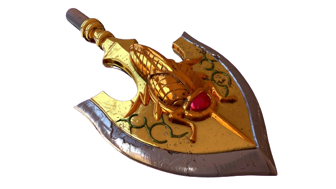
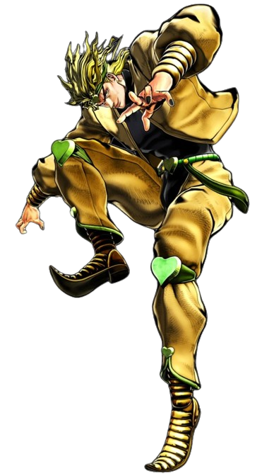

Backstory
In JoJo's Bizarre Adventure Part 3: Stardust Crusaders, Dio Brando's backstory is further elaborated upon, shedding light on his methods and motivations. Following his resurrection, Dio became fascinated with the concept of Stands, supernatural manifestations of one's fighting spirit with unique abilities. He learned about the Stand arrows, artifacts that could awaken latent Stand abilities within individuals. Dio discovered that these arrows had been crafted from a mysterious meteorite, and he sought to use them to bolster his power and control.Utilizing his resources and influence, Dio managed to acquire several Stand arrows and began experimenting with them. He subjected individuals to the arrows' piercing influence, triggering the manifestation of Stands in some cases. These Stand users became his loyal followers, known as the Stand Users of Dio's Army, each possessing unique abilities granted by their Stands. Dio's obsession with power and dominance drove him to seek out the most potent Stand users he could find, recruiting them to his cause. He saw Stands not only as tools for combat but also as symbols of his superiority over others.
Furthermore, Dio's backstory delves into his psychological makeup, revealing his insatiable thirst for control and his disdain for weakness. His upbringing in poverty and abuse instilled in him a desire to rise above his circumstances by any means necessary. This ruthless ambition, combined with his vampiric immortality and newfound Stand abilities, made Dio an immensely formidable adversary. Throughout Stardust Crusaders, Dio's backstory serves to underscore the depth of his malevolence and the lengths to which he will go to achieve his goals. His creation and manipulation of Stand users with the Stand arrows exemplify his cunning and ruthlessness, making him one of the most compelling antagonists in the JoJo series.

